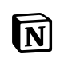

UX Planning
기존 화면의 문제를 찾고 사용자 목적에 맞춰 정보 구조, 콘텐츠 우선순위, 주요 이동 흐름을 재정리할 수 있습니다.
- 문제 정의
- IA 정리
- 와이어프레임
UIUX
Designer
About me
공간 연출 현장에서 익힌 관찰력과 구조화 능력을 정보의 우선순위, 화면 흐름, 반응형 구현으로 연결합니다.
사용자가 자연스럽게 목적지에 도달하는 경험을 만들고자 합니다.
촬영 세트와 공간 연출 경험을 바탕으로 사용자가 어디서 멈추고, 무엇을 먼저 보고, 다음에 어디로 이동해야 하는지 구조화할 수 있습니다.
브랜드 소개, 제품, ESG, 채용처럼 흩어진 콘텐츠를 사용자의 탐색 목적에 맞춰 묶고 우선순위를 세우는 역량이 있습니다.
톤앤매너, 컬러, 타이포그래피, 이미지 사용 기준을 정리해 페이지마다 일관된 브랜드 경험이 이어지도록 설계합니다.
Figma 시안을 HTML, CSS, JavaScript 기반의 반응형 화면으로 옮기고, 사용자의 행동을 돕는 인터랙션까지 연결합니다.
History
미술학부 편입
미술학부 조소전공 졸업
미술학부 조소전공 수석 입학
미술학부 조소전공 졸업
촬영 컨셉 기획 및 제작
사진 편집 및 액자, 앨범 디자인 제작 담당
촬영 컨셉 기획 및 대행사와의 소통 담당
소품 리서치 및 준비 | 세트 디자인 | 공간 연출
생성형 AI를 활용한 반응형
웹 콘텐츠 개발 기획자 양성 수료
Work Scope
기존 화면의 문제를 찾고 사용자 목적에 맞춰 정보 구조, 콘텐츠 우선순위, 주요 이동 흐름을 재정리할 수 있습니다.
브랜드 무드와 화면 위계를 연결해 메인·서브 페이지의 시각 시스템과 반응형 레이아웃을 설계할 수 있습니다.
HTML, CSS, JavaScript를 기반으로 시맨틱 마크업, 인터랙션, 반응형 화면 구현과 배포가 가능합니다.
프로젝트 이슈를 문서화하고 GitHub 기반 협업, 브라우저 오류 점검, 발표 자료 정리까지 수행할 수 있습니다.
팀 프로젝트의 리더로 핵심 페이지 UI, 히어로 영상, 주요 퍼블리싱, GitHub 병합과 오류 개선을 담당했습니다.
기업 메인 페이지의 콘텐츠 우선순위와 브랜드 탐색 흐름을 재정리하고, 반응형 메인 화면을 디자인·퍼블리싱했습니다.
제품 중심으로 흩어진 탐색 경험을 브랜드 무드와 사용자 흐름 중심으로 재구성하고 비주얼 시스템을 구축했습니다.
License
한국생산성본부 · 2026.02.20 취득
생성형 AI를 활용한 반응형 웹 콘텐츠 개발 기획자 양성 과정 · 2026.05.28 수료
현장 이동과 업무 상황에 대응 가능한 기본 자격입니다.
Tools
IA 정리, 와이어프레임, 반응형 UI 시안, 컴포넌트와 디자인 시스템 정리까지 연결해 활용합니다.
웹 비주얼에 필요한 이미지 보정, 합성, 목업 제작, 배너용 에셋 정리를 수행할 수 있습니다.
로고, 아이콘, 간단한 그래픽 요소를 벡터 기반으로 제작하고 웹용 에셋으로 정리할 수 있습니다.
프로젝트 히어로와 브랜드 무드를 강화하는 짧은 영상 편집과 컷 구성 작업 경험이 있습니다.
간단한 모션 그래픽과 전환 효과를 제작해 웹 비주얼의 몰입감을 높일 수 있습니다.
페이지 구조를 시맨틱 태그로 나누고, 접근성과 유지보수를 고려한 마크업을 작성할 수 있습니다.
그리드, 플렉스, clamp, 미디어쿼리를 활용해 데스크톱과 모바일 화면을 안정적으로 구성합니다.
탭, 모달, 스크롤 반응, 메뉴 상태처럼 사용자의 행동에 반응하는 인터랙션을 구현할 수 있습니다.
프로젝트 구조를 나누고 HTML, CSS, JavaScript 파일을 관리하며 디버깅할 수 있습니다.
기존 플러그인이나 DOM 제어가 필요한 화면에서 빠르게 이벤트와 상태를 연결할 수 있습니다.
스크롤 진입 타이밍에 맞춰 과하지 않은 모션을 적용하고 페이지 리듬을 조정합니다.
브랜드 이미지, 카드 리스트, 모바일 콘텐츠를 슬라이드 UI로 구성하고 반응형 옵션을 조정할 수 있습니다.
반복되는 스타일 값을 정리하고 섹션 단위로 스타일을 관리하는 방식에 익숙합니다.
브랜치 관리, 소스 병합, 배포 이력 확인, 협업 중 발생한 충돌과 오류를 점검할 수 있습니다.

Notion회의 내용, 역할 분담, 일정, 리서치 근거를 문서화해 프로젝트 흐름을 정리할 수 있습니다.
정적 웹사이트를 배포하고 수정 사항이 실제 URL에 반영되는지 확인할 수 있습니다.
서버 업로드가 필요한 상황에서 파일 구조를 확인하고 필요한 리소스를 전송할 수 있습니다.
코드 구조 점검, 오류 원인 탐색, 반복 작업 정리처럼 퍼블리싱 과정의 생산성을 높이는 데 활용합니다.
리서치 정리, 문장 다듬기, UX 개선 방향 비교처럼 기획과 문서화 과정에 활용합니다.
다양한 관점의 아이디어를 빠르게 비교하고 콘텐츠 구조를 확장하는 데 활용합니다.
브랜드 무드를 보여주는 영상 소스와 비주얼 레퍼런스를 생성하는 데 활용합니다.